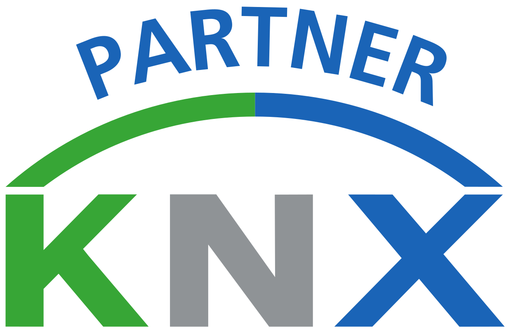

In 2016 heb ik mijn KNX certificaat gehaald,
ik ben nu officeel partner van KNX.
Graag zou ik een app willen ontwikkelen,
die gebruiksvriendelijk is en waar ook andere protocollen in kunnen,
zoals Nefit Easy, Toon, Itho en Orcon.
Zodat bestaande systemen niet vervangen hoeven te worden,
maar dat deze waardes gebruikt kunnen worden om iets anders aan te sturen.